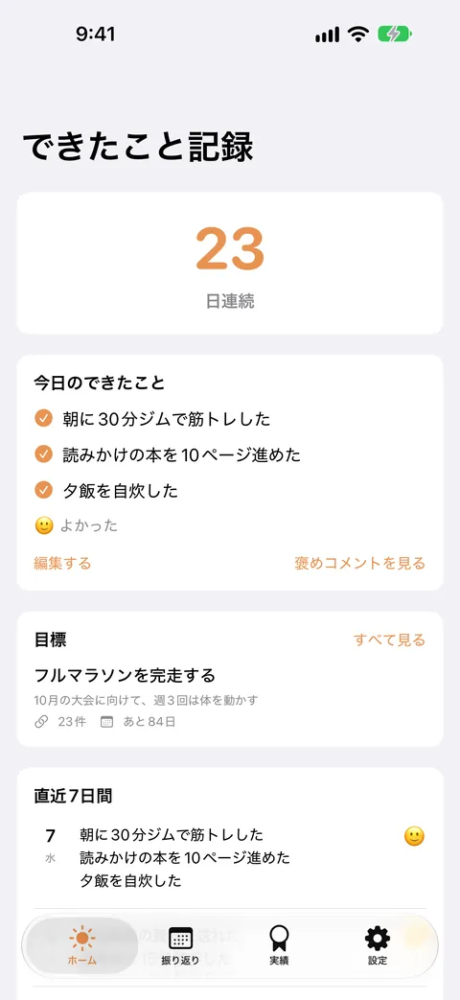
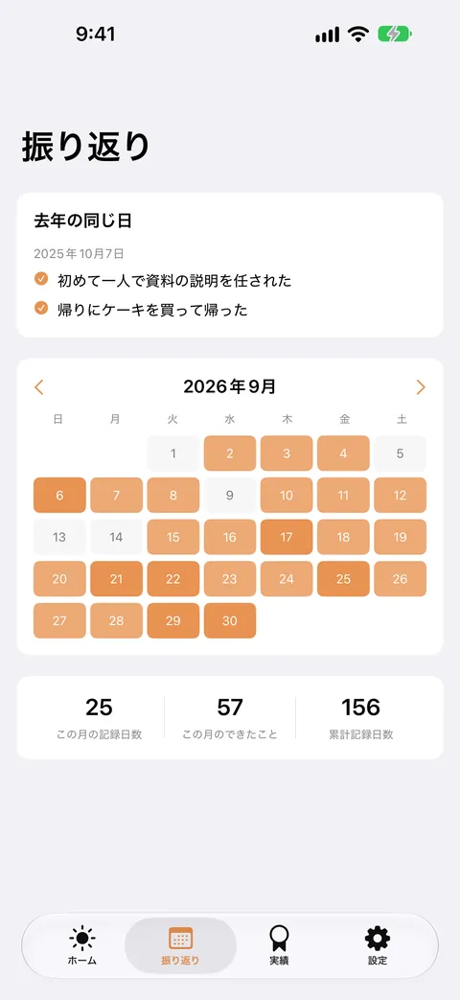
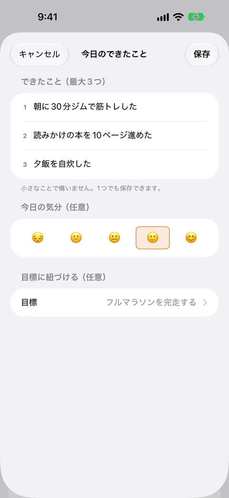
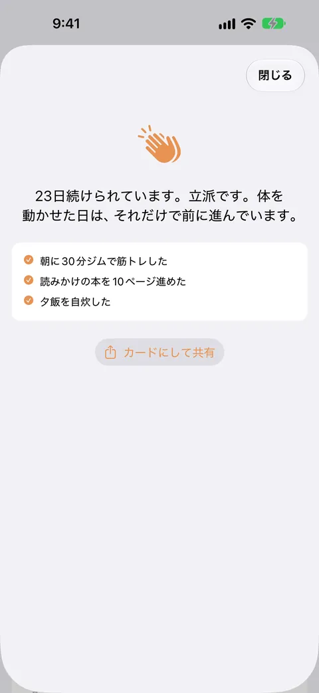
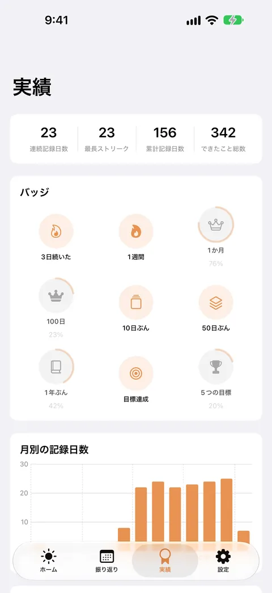

できたこと記録
小さな一歩をストリークで振り返る
寝る前に、今日できたことを3つまで書き留めるだけ。連続記録、目標との紐づけ、去年の同じ日の振り返り、続けた日数のバッジで、小さな成功を積み上げられます。全機能が無料で、広告もありません。





できたこと記録は、寝る前に「今日できたこと」を3つまで書き留めて、続けた日数や振り返りで小さな成功を積み上げていくアプリです。長い日記は要りません。短い一言を3つだけ残します。
こんなときに
一日の終わりに、できなかったことばかり思い浮かんでしまう。自分を責めずに、その日できたことを確かめてから眠りたい。
できること
- 「できたこと」を1日に3つまで、短い文で記録します。1つだけでも保存できます。任意で、その日の気分を5段階のスタンプで残せます
- 記録するたびに、褒めコメントが表示されます。コメントは、アプリに内蔵した言い回しから、書いた内容に合わせて端末の中で組み立てます。通信は使いません
- 連続記録日数と、直近7日間の記録をホームで見られます
- 目標を決めて、日々の記録を紐づけられます。目標は同時に3つまで、期限は任意です。達成した目標はアーカイブして、バッジとして残ります
- 振り返りの画面で、「去年の同じ日」の記録、月ごとのカレンダー、記録日数の集計を見られます。続けるほど、1年前の自分に会えます
- 実績の画面で、続けた日数や記録の累計に応じて解除されるバッジと、月別の記録日数のグラフを見られます
- 日付と連続記録日数を載せたカード画像を作って、共有できます。載せる内容（できたことの本文・目標）は、共有のたびに自分で選べます。共有しなければ、記録が端末の外に出ることはありません
- 記録をCSVファイルで書き出せます。バックアップや、ほかのアプリへ移すときに使えます
料金について
すべての機能を無料で使えます。課金も広告もありません。
安心について
記録はすべて端末の中だけに保存されます。外部のサーバーへ送信されることはなく、アカウント登録も不要です。アプリ自身が通信を行うことはありません。
本アプリは、できたことを記録して振り返るためのツールです。診断・治療・カウンセリングの代わりにはなりません。気分の落ち込みやつらさが続くときは、医師などの専門家にご相談ください。